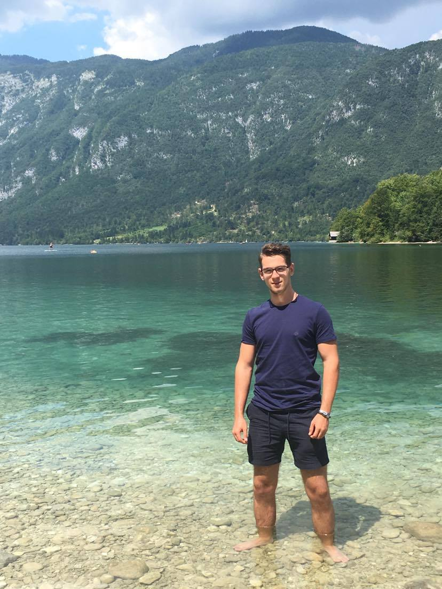
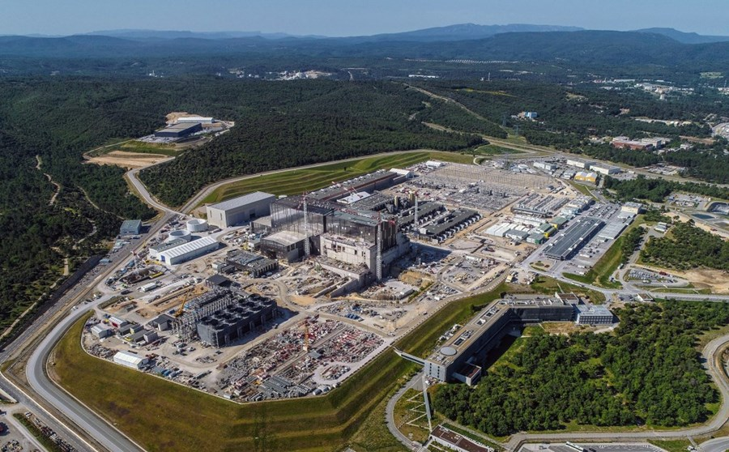
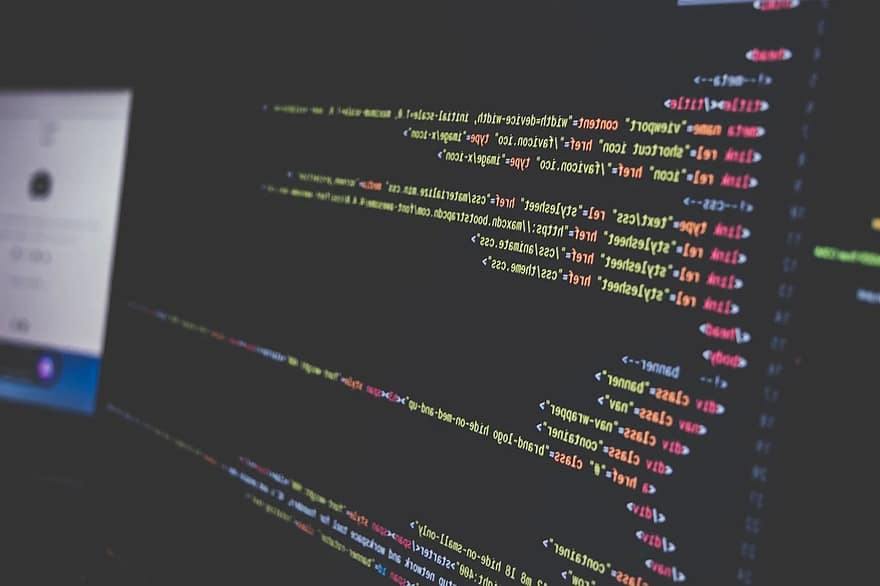
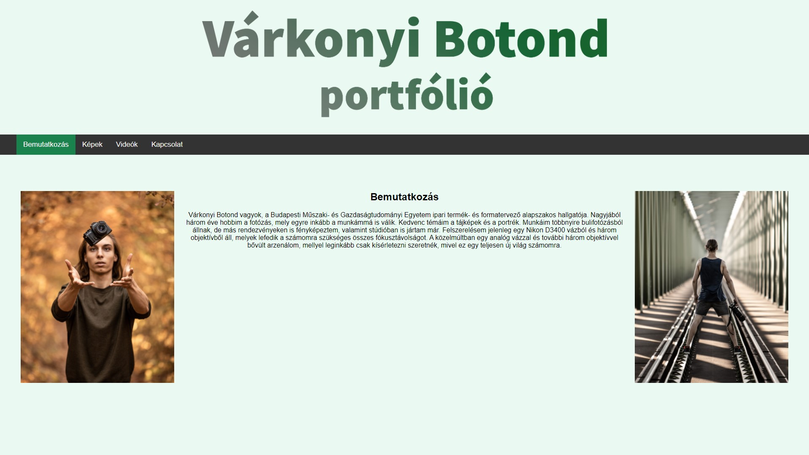

Kéki Ádám
ENERGETIKAI MÉRNÖK
Üdv!
Az én nevem Kéki Ádám, leendő energetikai mérnök.
Tanulmányok:
Jelenleg a Budapesti Műszaki és Gazdaságtudományi Egyetem első féléves hallgatója vagyok.
A debreceni Ady Endre Gimnáziumban érettségiztem. Az itt eltöltött tanulmányaim során komplex felsőfokú angol és komplex középfokú német nyelvvizsgát szereztem.
Elérhetőségeim:
 E-mail: adamkeki1011@gmail.com
E-mail: adamkeki1011@gmail.com
Facebook: Kéki Ádám
 Instagram: @adamkeki1011
Instagram: @adamkeki1011
Címem: Debrecen, 4225 Jósa Miklós utca 3. (Magyarország)
|  |
ITER megtekintéseAz ITER (Nemzetközi Kísérleti Termonukleáris Reaktor) az egyik legnagyobb nemzetközi mágneses-fúziós fejlesztési projekt a világon. Ezen a projekten több ország is dolgozik. Többek között: az Európai Unió, USA, India, Kína, Oroszország, Dél-Korea és Japán. Életem során így vagy úgy mindenképp szeretném megnézni élőben. Persze számomra legjobb forgatókönyv az lenne, ha lehetőségem nyílna mérnökként résztvenni ebben a hatalmas projektben. |
Mérnöki diploma megszerzéseJelenleg a legfontosabb céljaim közé tartozik az egyetem sikeres elvégzése. Úgy gondolom, hogy energetikai mérnökként (meg úgy alapból mérnökként) munkahelyek széles skálája nyílik meg, amely kellő önfejlesztéssel akár tovább is bővíthető. |
|  |
Portfólió oldalam elkészítéseRövidtávú célom jelenleg az 1. féléves "Portfólió oldal készítése" feladat abszolválása. Ha éppen ezt a sort olvassa, akkor láthatja a feladat általam készített végeredményét:) |
|  |
Elképzelés, forrásokSzerencsére inspirációt tudtam meríteni az előadásban megadott Várkonyi Botond portfólió oldaláról. Így elég hasonló színekkel dolgoztam. A kódolás részét többnyire összeszedegettem a Youtuberól. Sokat segített továbbá a belinkelt weboldalak (w3schools.com) és Lovas Alex lejátszási listája. Azonban amivel a legtöbbet megszenvedtem az a JS értelmezése volt pár Youtube videó alapján. De végül valamennyire sikerült összeszedni belőle azt ami nekem kellett. |